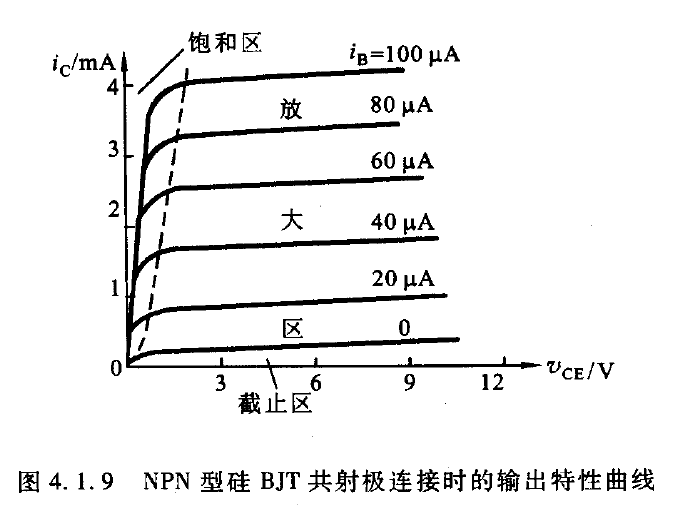

三极管的结构，工作原理，三种组态起码要认识（如何工作与分析不做太高要求），放大作用如何实现，伏安特性曲线（尤其输出，各种区与每种线的含义），各种基本参数
半导体三极管
三极管：双极结型三极管(BJT，又叫双极晶体管)
发射结上的箭头的方向指向发射结导通的方向(P指向N)，由此可以区分NPN型和PNP型
发射区：发射载流子，既然要发射，那载流子浓度必然很高 集电区：收集载流子，面积大但是载流子浓度不高 基区：控制区域
结构特点：
- 发射区的掺杂浓度最高
- 集电区的掺杂浓度低于发射区，且面积大
- 基区很薄，一般在几个微米，且掺杂浓度最低
电流放大
放大实际上是通过核心元件三极管控制能量的新的变化来实现放大
实现放大的外部条件：发射结正偏，集电结反偏
载流子内部传播过程-以NPN型为例
- 发射结正偏，发射区的自由电子扩散到基区
- $I_{EN}$：自由电子的扩散
- $I_{EP}$:空穴的扩散,由于浓度原因，显然远不如$I_{EN}$
- $I_{E} = I_{EP}+I_{EN} \approx I_{EN}$
- 基区：自由电子此时进入基区后，基区中现在扩散过来的非平衡少子比他的多子还多，所以会继续往前扩散，所以自由电子会经过基区继续向集电极扩散，在扩散过程中，必然会发生复合。（如果基区足够宽，就可以让绝大多数电子在基区中复合，这也就是为什么基区要做的足够薄）。但是复合之后，又可以在基极$I_B$的影响下重新产生。所以可以认为其中的浓度不变。扩散速度和浓度梯度有关，所以必须让集电结这里的电子必须被快速抽走保证扩散速度基本不变（刚好此处就集电结反偏了）
- 在$I_B$做一个KCL，可以看到$I_B=I_{EP}+I_{BN}-I_{CBO}=I_E-I_C$
- 集电区收集自由电子，反偏会加速漂移运动，产生了$I_{CBO}$
- $I_C=I_{CN}+I_{CBO}$
BJT电流分配关系
共基极直流放大系数 $\hat{\alpha}$ $$\hat{\alpha}=\frac{传输到集电极电流}{发射极注入电流}=\frac{I_C-I_{CBO}}{I_E}\approx \frac{I_C}{I_E}$$
他通常只与管子的结构尺寸和掺杂浓度有关，与外加电压无关，一般为0.9-0.99
共射极直流放大系数 $\hat{\beta}$ $$\hat{\beta} = \frac{I_{CN}}{I_{BN}} = \frac{I_C-I_{CBO}}{I_B+I_{CBO}}\approx \frac{I_C}{I_B}$$
反向饱和电流（穿透电流）：当$I_B$为0时，仍然有一个从C到E的电流,$I_{CEO}=(1+\hat{\beta})I_{CBO}$
三极管的放大作用主要是依靠它的发射极电流能够通过基区传输，然后到达集电极而实现的。
- 内部条件：发射区杂质浓度远大于基区浓度，并且基区很薄
- 外部条件：发射结正向偏置，集电结反向偏置
三种组态
看除去用于输入和输出之外共用的是哪个极
可以发现输入要么在基极就是在发射极
BJT的I-V特性曲线
现在考虑共射极连接的BJT曲线
输入特性
$$i_B=f(v_{BE})|_{V_{CE}=const}$$
当$V_{CE}=0$时，就相当于发射结的正向伏安特性曲线，当其大于1V时，$V_{CB}=V_{CE}-V_{BE}>0$,集电结反偏，收集载流子能力增强，基区复合减少，这使得同样的$V_{BE}$下的$I_B$减少，也就是曲线右移
有三个区：
- 死区
- 非线性区
- 近似线性区
- 非线性区和近似线性区的分界：（工作压降）
- 硅：0.6-0.7V
- 锗：0.2-0.3V
- 非线性区和近似线性区的分界：（工作压降）
输出特性
$$i_c=f(V_{CE})|_{i_B=const}$$
- 放大区
- 放大区域内输出曲线基本与横坐标平行，随着$v_{CE}$的增加略微向上倾斜(受基带宽度调制效应产生)。但是主要受到$i_B$的影响，此时发射结正偏，集电结反偏
- 基带宽度调制效应：在$V_{BE}$不变的情况下，$V_{CE}$的上升会导致$V_{CB}$反压上升，导致集电结内的空间电荷区的宽度上升，从而使得基带区的有效宽度下降，基区内的载流子复合机会下降，从而使得 $\beta$ 增大
- 饱和区
- 发射结和集电结均处于正偏。此时$V_{CE}<V_{BE}$,集电结内电场被削弱，收集载流子能力下降，此时$i_c$不再服从$\hat{\beta}i_{B}$的关系，而是随着$V_{CE}$的增长而增长。虚线可以认为是饱和区和放大区的分界线。对于小功率管，可以认为$V_{CE}=V_{BE}$时处于临界饱和状态
- 截止区
- 发射结和集电结全部反向偏置，此时$i_B=-I_{CBO}$,$i_C=I_{CEO}$(但是对于小功率管很小，可以忽略)
BJT的主要参数
基本参数
- 电流放大系数
- 共发射极直流放大系数 $\hat{\beta}\approx \frac{I_C}{I_B}$（$V_{CE}$为常数）
- 共发射极交流电流放大系数 $\beta = \frac{\Delta I_C}{\Delta I_B}$
- 共基极直流电流放大系数 $\hat{\alpha} = \frac{I_C-I_{CBO}}{I_E} \approx \frac{I_C}{I_E}$
- 共基极交流放大系数 $\alpha = \frac{I_C}{I_E}$
- 极间反向电流
- 集电极基极反向饱和电流$I_{CBO}$：即发射极开路时，集电极的反向饱和电流
- 集电极发射极间的反向饱和电流$I_{CEO} = (1+\hat{\beta})I_{CBO}$,即输出特性曲线$I_B=0$ 那里对应的Y坐标的值，也称作集电极发射极间穿透电流
- 极限参数
- 集电极允许最大电流$I_{CM}$
- 集电极允许最大功率损耗$P_{CM}=I_CV_{CE}$
- 反向击穿电压
- $V_{(BR)CBO}$——发射极开路时的集电结反向击穿电压。
- $V_{(BR)EBO}$——集电极开路时发射结的反向击穿电压。
- $V_{(BR)CEO}$——基极开路时集电极和发射极间的击穿电压。
温度对BJT参数及其特性的影响
温度每升高10度，$I_{CBO}$约增加一倍
温度每升高1度，$\beta$值增大$0.5%-1%$
温度对反向击穿电压中的$V_{(BR)CBO}$和$V_{(BR)CEO}$都有影响，温度升高，两者增大
故而：
- 温度升高，输入特性曲线左移
- 温度升高，输出特性曲线上移，曲线族间距增大